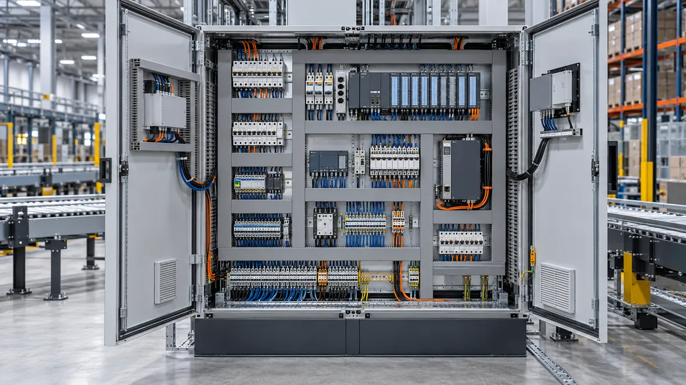

PERSONAL DE INSTALACIÓN
Suministro de personal mecánico y eléctrico
Cuadrillas flexibles de técnicos mecánicos y electricistas para apoyar la instalación y el mantenimiento de sistemas intralogísticos.
- Ensamble, montaje y mantenimiento mecánico
- Cableado, tableros e integración eléctrica
- Personal escalable según el alcance acordado
